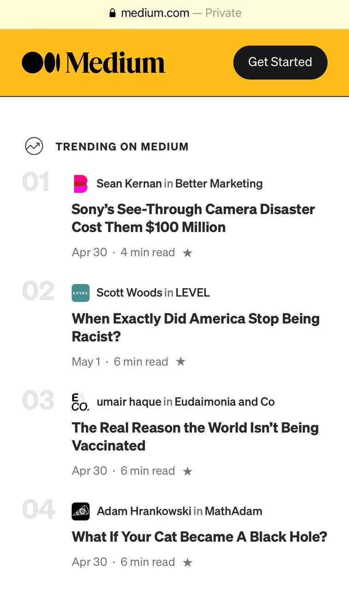

White Space and Clean Design
Every time I think of a clean design with good white space, I remember this site. I found it a year ago to understand concepts of CSS and what better than a site that it was developed by someone who understand those principles. I love the way he use simplicity and correct spacing between the elements.
Interneting is Hard
PARC: Alignment

Medium is a site that you will definitely find in the articles of this class. Aligment is a principle that I notice inmediately in presentations in my job while learning, and in my calling where I use them to teach. You can see it often in this page while you search through the articles and in the enumaration of those. Aligment is visually appealing, and it is one of the most important principles of design.
Medium
PARC: Contrast

I feel Instructure exemplifies perfecly what contrast is. The transition between the colors is visually appealing and it calls our attention inmediately. The way they use the reddish accents to guide you through the website and registration, exemplifies a good use of contrast not just in design but in user experience.
Instructure